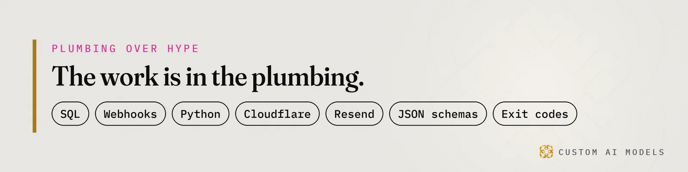

Custom AI Models
Custom AI Models Yeriko Vargas · Founder, Custom AI Models · Oct 2026
Yeriko Vargas · Founder, Custom AI Models · Oct 2026Short answer. B2B HVAC distributors near Birmingham MI lose orders when AI engines cannot read their data. Custom AI Models fixes the order: unify ERP and spreadsheet data first, add deterministic checks, then apply a model. The same base supports commercial HVAC estimating and workflow automation, and refrigerant compliance and tracking software for distributors.
Why do B2B HVAC distributors near Birmingham MI vanish from AI answers?
A buyer types a question into ChatGPT, Copilot or Google, and the engine names a few firms. The rest never appear. For B2B HVAC distributors near Birmingham MI, that shortlist is the new front counter, and a firm the engine cannot read does not make it on. Mechanical contractors in Troy, Novi and Bloomfield Hills ask for a supplier and accept the answer they get.
Pew Research (2025) measured what happens to the click. Google users clicked a result in 8% of visits when an AI summary appeared, versus 15% without one. Inside the summary, users clicked a source link in only 1% of those visits. The old list of links is dying.
These summaries are not rare. Pew Research (2025) found that 53% of searches of ten words or more triggered one. Owners and purchasing managers type long, specific questions. Those are exactly the queries that get a summary.
Ahrefs (2025) ties AI Overviews to a 34.5% lower click-through rate for the top-ranking page. Gartner (February 2024) predicted traditional search engine volume would drop 25% by 2026 as AI chatbots take over answers. A first-page ranking buys less than it used to.
Read that as a plumbing problem. A competitor does not need a better counter. Their facts just need to be easier for the engine to lift.

What does staying invisible cost a commercial HVAC firm?
Invisibility costs the orders you never see. A contractor asks an engine for a refrigerant supplier, gets three other names, and never calls you. No lost bid shows up in a report. No missed call lights the phone. The demand simply goes somewhere else, and your ERP has no column for it.
- New contractor accounts that never open, because the engine named a competitor.
- Repeat orders that drift to whoever answers first.
- Quotes that stall while estimating still lives in a spreadsheet nobody trusts.
- Refrigerant records scattered across files, so a buyer cannot verify you at all.
High-ticket client acquisition for HVAC contractors starts with whether an engine can read your firm at all. Engines recommend what they can parse: consistent names, stock, service areas and account rules. Most distributors have those facts. They sit in an ERP export, a price list PDF and one veteran's memory.
We covered the homeowner side of this in Your HVAC SEO froze. AI Overviews took the click. The commercial side is quieter and the stakes per account are higher.
How do HVAC wholesalers in Oakland County automate repeat contractor orders?
Wholesalers automate repeat orders by unifying the data first: one clean record per contractor account, per part, per price. A deterministic rule set then decides what reorders. Only after that does a model draft the message or answer the question. Unify, model the data, gate every step, and put the model last.
The mess is familiar. Duplicate part numbers across suppliers. Contractor names spelled several ways. Price lists locked in PDFs. Stock counts that disagree between the ERP export and the counter. A model pointed at that invents confident nonsense, and a wrong quote on a commercial job is a financial liability. The data work is laid out in Your wholesale counter is the bottleneck.
Each automated reorder passes a gate before anything is sent:
- Account match: the contractor ID resolves to exactly one record.
- Part match: the SKU exists once in the catalog.
- Price check: the quoted price equals the current price list.
- Stock check: on-hand quantity covers the order.
- Human gate: a counter lead approves anything outside the rules.
Contractor accounts see only their own pricing and history. That is **RBAC** work, and no prompt can do it for you. The ERP side, including why contractors still have to ask, is in Your contractors reorder the same parts.
Commercial HVAC estimating and workflow automation starts with the inputs
Commercial HVAC estimating and workflow automation breaks on the same thing every time: the inputs. Takeoff sheets, equipment specs, supplier prices and labor assumptions live in separate files. An assistant that reads them produces a number that looks right and is wrong. Fix the files, then gate the output.
A gate here is plain code. Validate each estimate line against the current price list with a JSON schema. Fail the run with a nonzero exit code on any mismatch. Log the failure. Those **deterministic validation gates** are the difference between a demo and a system, and The model is a stage. The program is the system. shows where the line sits.
Refrigerant compliance and tracking software for distributors follows the same rule. Every cylinder, sale and return needs a record that joins to a customer and a date. **Telemetry** on those records shows **data drift** early, before an auditor or a buyer finds the gap. A check flags the hole. The model only summarizes what the checks already passed.
The website belongs in the same chain. Product pages, service areas and account pages should read from the same unified data as the counter. One source feeds the ERP, the quote and the page an engine reads. That is how a site connects to the whole operation, and it is why engines can describe you correctly.
Custom AI Models builds the fix, and the free check comes first
Custom AI Models builds the system underneath all of this. Yeriko Vargas brings 8.5 years in data, and the company has built since 2022. There is no HVAC project on our record yet. We speak as the builder of the system, and we claim no results we have not delivered.
What we run today is the HVAC SEO + GEO Doctor. It checks whether Google and AI engines can find, read and recommend a firm, and it gets the fix started. Crawl access, page structure, consistent business facts and answer-ready passages all get read the way an engine reads them.
We sell the work, never a ranking. Nobody outside the labs has the formula, which is why GEO vs SEO: verify this before you spend a dollar starts with checks you can run yourself. Engines cite pages they can lift covers what makes a page liftable.
Bring the messy export. The one you hate opening. That is where the work begins.
Questions people ask
What data does a distributor need before AI touches it?
Start with three clean tables: contractor accounts, the parts catalog and the current price list. Each needs one record per item and consistent IDs. Add stock counts and refrigerant transaction records next. Without those, any assistant guesses, and guessed quotes or compliance answers create real financial and legal exposure.
How long does the first fix take?
It depends on how many systems hold your facts and how clean they are. One ERP with tidy exports moves faster than five spreadsheets and a shared inbox. The free HVAC SEO + GEO check shows what an engine can already read, so the first scope rests on evidence instead of a guess.
Who owns the system once it is built?
You do. The rules, schemas and gates are code and configuration your team can read. Contractor access follows role-based rules, so each account sees only its own pricing. A model can be swapped later without rebuilding the data and checks, because the model is the last stage.
Can this help us get more commercial accounts?
It helps engines read and recommend your firm correctly, and it speeds the work after a contractor calls: quotes, reorders and account records. No one can promise a ranking or a named placement. The honest claim is cleaner data, faster operations and a site engines can quote accurately.